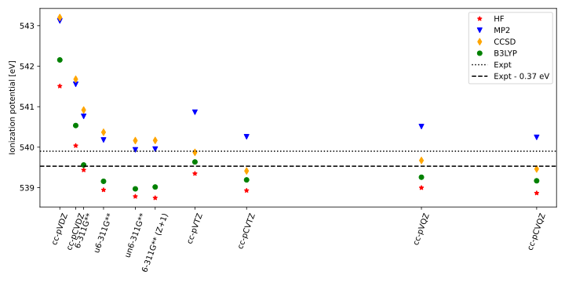

X-ray spectroscopies¶
General aspects. In X-ray absorption spectroscopy the photon energy is tuned such that core electrons are targeted and excited to either bound or continuum states, and X-ray emission spectroscopy measures the subsequent decay from such an excited state. These core excitations/de-excitations exhibit strong relaxation effects, making theoretical considerations of the processes particularly challenging. While the removal of a valence electron leaves the remaining electrons relatively unaffected, removing core electrons has a substantial effect on the other electrons due to the significant change in the screening of the nucleus. Compare and contrast to UV/vis

Figure: IP of elements (1s, 2s)?
Not included (yet)
SO-coupling
beyond electrinc-dipole approximation
multireference methods
Loading modules, parameters, and broadening functions:
# loading QC software suites and functionalities
import veloxchem as vlx
from pyscf import gto, scf, mp, cc
import gator
import adcc
from veloxchem.rsplinabscross import LinearAbsorptionCrossSection
# loading python
import matplotlib.pyplot as plt
import numpy as np
import copy
import time
from scipy.interpolate import interp1d
# for vlx
from mpi4py import MPI
comm = MPI.COMM_WORLD
silent_ostream = vlx.OutputStream(None)
# conversion factors
au2ev = 27.211386
# broadening functions
def lorentzian(x, y, xmin, xmax, xstep, gamma):
xi = np.arange(xmin,xmax,xstep); yi=np.zeros(len(xi))
for i in range(len(xi)):
for k in range(len(x)): yi[i] = yi[i] + y[k] * (gamma/2.) / ( (xi[i]-x[k])**2 + (gamma/2.)**2 )
return xi,yi
def gaussian(x, y, xmin, xmax, xstep, sigma):
xi = np.arange(xmin,xmax,xstep); yi=np.zeros(len(xi))
for i in range(len(xi)):
for k in range(len(y)):
yi[i] = yi[i] + y[k]*np.e**(-((xi[i]-x[k])**2)/(2*sigma**2))
return xi,yi
X-ray photoemission spectroscopy¶
We will here focus on calculating ionization potentials (IP:s), from which the isotropic photoemission spectrum is formed by giving each IP the same intensity and then broadening with a function. Can go beyond that using Dyson orbitals, but it doesn’t make much of a difference…
From Koopmans’ theorem¶
IP of gas phase water, using HF MO energies:
water = """
O 0.0000000000 0.0000000000 0.1178336003
H -0.7595754146 -0.0000000000 -0.4713344012
H 0.7595754146 0.0000000000 -0.4713344012
"""
# SCF calculation
molecule = vlx.Molecule.read_str(water, units='angstrom')
basis = vlx.MolecularBasis.read(molecule, "6-31G")
scf_drv = vlx.ScfRestrictedDriver(comm,ostream=silent_ostream)
scf_drv.compute(molecule, basis)
# Extract orbital energies
orbital_energies = scf_drv.scf_tensors['E']
print('1s IP from the Koopmans theorem:',np.around(au2ev*orbital_energies[0],3))
1s IP from the Koopmans theorem: -559.501
This is to be compared to the experimental value, which is 539.9 eV. The overestimation of almost 20 eV is due to lack of relaxation, which results from the reorganization of the valence electrons in response to a reduction of screening of the nuclei. An approach for including these effects in IP calculation is to use the \(\Delta\)SCF approach, in which the difference in total energy between the neutral and a core-hole system is considered as the IP.
Maximum overlap method (MOM)¶
Eigenvalue equation
Chose to overlap the most with the span
Note potential instabilities for post-HF on core-hole (and excited states as well).
Note
We currently use pyscf for the illustrations involving core-holes, as VeloxChem lacks MOM (for now).
From total energy differences¶
# Build mol-object and perform ground state SCF
mol = gto.Mole()
mol.atom = water; mol.basis = '6-31G'
mol.build()
scf_res = scf.UHF(mol)
scf_res.kernel()
# Copy wave function information and change occupancy of alpha1 to 0
mo0 = copy.deepcopy(scf_res.mo_coeff)
occ0 = copy.deepcopy(scf_res.mo_occ)
occ0[0][0] = 0.0
# Perform wave function calculation with MOM restriction
scf_ion = scf.UHF(mol)
scf.addons.mom_occ(scf_ion, mo0, occ0)
scf_ion.kernel()
# IP from energy difference
print('Ionization potential:',np.around(au2ev*(scf_ion.energy_tot() - scf_res.energy_tot()),3),'eV')
converged SCF energy = -75.9838703827192 <S^2> = 6.3389294e-12 2S+1 = 1
Overwritten attributes get_occ of <class 'pyscf.scf.uhf.UHF'>
converged SCF energy = -56.0754789470865 <S^2> = 0.76257805 2S+1 = 2.0125387
Ionization potential: 541.735 eV
This estimate is now within 2 eV from experiment, and we can include correlation through MP2:
# Run MP2 on neutral and core-hole wave functions
mp_res = mp.MP2(scf_res).run()
mp_ion = mp.MP2(scf_ion).run()
# IP from energy difference
print('Ionization potential:',np.around(au2ev*(mp_ion.e_tot - mp_res.e_tot),3),'eV')
E(UMP2) = -76.1130483955489 E_corr = -0.12917801282971
E(UMP2) = -56.1523709631034 E_corr = -0.0768920160169648
Ionization potential: 543.158 eV
As well as use KS-DFT:
# SCF calculation with unrestricted KS-DFT
dft_res = scf.UKS(mol)
dft_res.xc = 'b3lyp'
dft_res.kernel()
# Create core-hole in alpha1
mo0 = copy.deepcopy(dft_res.mo_coeff)
occ0 = copy.deepcopy(dft_res.mo_occ)
occ0[0][0] = 0.0
# SCF with core-hole
dft_ion = scf.UKS(mol); dft_ion.xc = 'b3lyp'
scf.addons.mom_occ(dft_ion, mo0, occ0)
dft_ion.kernel()
# IP from difference
print('Ionization potential:',np.around(au2ev*(dft_ion.energy_tot() - dft_res.energy_tot()),3),'eV')
converged SCF energy = -76.3480474320838 <S^2> = 2.5510261e-11 2S+1 = 1
Overwritten attributes get_occ of <class 'pyscf.dft.uks.UKS'>
converged SCF energy = -56.4125421194361 <S^2> = 0.75441021 2S+1 = 2.0044054
Ionization potential: 542.473 eV
MP2 and DFT currently brings us away from experiment, but we note that the basis set is small and ill suited for core properties, and relativistic effects are not included either (more on this below). Using a cc-pCVTZ basis we instead obtain:
HF: 538.929 eV
MP2: 540.257 eV
B3LYP: 539.192 eV
i.e. closer to experiment for the correlated methods (note that scalar-relativistic effects will shift these results upwards by \(\sim\)0.3 eV).
XPS of the ESCA molecule¶
uracil = ' C 0.000000 0.313341 1.284889;\
C 0.000000 -1.129946 1.193271;\
C 0.000000 -1.722413 -0.011510;\
N 0.000000 -1.002386 -1.171240;\
C 0.000000 0.377102 -1.212137;\
N 0.000000 0.946281 0.038980;\
O 0.000000 0.966706 2.309430;\
O 0.000000 1.007669 -2.246643;\
H 0.000000 -2.791379 -0.129000;\
H 0.000000 1.954858 0.054525;\
H 0.000000 -1.456186 -2.067038;\
H 0.000000 -1.702677 2.098114'
# Create mol-object and perform neutral SCF calculation
mol_ura = gto.Mole()
mol_ura.atom = uracil; mol_ura.basis = 'STO-3G'
mol_ura.build()
scf_ura = scf.UHF(mol_ura)
scf_ura.kernel()
# Perform core-hole calculation for each carbon atom (MOs 4-7) and append SCF IPs to a list
esca_ips = []
for i_mo in [4,5,6,7]:
mo0 = copy.deepcopy(scf_ura.mo_coeff)
occ0 = copy.deepcopy(scf_ura.mo_occ)
occ0[0][i_mo] = 0.0
ion_tmp = scf.UHF(mol_ura)
scf.addons.mom_occ(ion_tmp, mo0, occ0)
ion_tmp.kernel()
esca_ips.append(au2ev*(ion_tmp.energy_tot() - scf_ura.energy_tot()))
# Broaden with a Lorentzian and plot
plt.figure(figsize=(6,3))
x,y = esca_ips,np.ones((len(esca_ips)))
# Call Lorentzian broadening with x-data, y-data, lower x-lim, upper x-lim, xstep, and broadening gamma
xi,yi = lorentzian(x,y,min(x)-2,max(x)+2,0.01,0.4)
plt.plot(xi,yi); plt.show()
converged SCF energy = -407.075332882538 <S^2> = 1.2292079e-06 2S+1 = 1.0000025
converged SCF energy = -396.183354220842 <S^2> = 0.84555897 2S+1 = 2.0933791
converged SCF energy = -396.245415504634 <S^2> = 0.76427602 2S+1 = 2.0142254
SCF not converged.
SCF energy = -396.328937970414 after 50 cycles <S^2> = 0.99583232 2S+1 = 2.2323372
converged SCF energy = -396.439776971732 <S^2> = 0.76032128 2S+1 = 2.0102948

Note some convergence issues, largely relating to the small basis set.
We can also broaden with a Gaussian (note that FWHM\(= \gamma = 2\sqrt{2\ln{2}} \sigma\)):
plt.figure(figsize=(6,3))
xi,yi = gaussian(x,y,min(x)-2,max(x)+2,0.01,0.5/(2*np.sqrt(2*np.log(2))))
plt.plot(xi,yi); plt.show()

Comparison to experiment using a cc-pCVTZ basis set:

Expt: O. Travnikovaa et al., J. Elec. Spec. Rel. Phenom. 185, 191 (2012)
The features originate in, from low to high energy: -CH\(_3\), -CH\(_2\)-, -CO-, and CF\(_3\). We note a reasonable good agreement for the first two features, but the comparison is noticably worse for higher energies. This is likely an effect of the more significant change in electronic structure imposed by the very electronegative fluorine and oxygen atoms, which HF/cc-pCVTZ is not capable of describing properly.
X-ray absorption spectroscopy¶
Focus on NEXAFS, Core-excited states are embedded in a manifold of valence-excited states that needs to be considered by some computationally feasible method.

Global spectrum
CVS-ADC eigenstates¶
References to CVS approach and CVS error.
struct = gator.get_molecule(water)
basis = gator.get_molecular_basis(struct,'6-31G')
scf_res = gator.run_scf(struct,basis)
adc_res = gator.run_adc(struct,basis,scf_res,method='cvs-adc2x',singlets=6,core_orbitals=1)
SCF converged in 5 iterations.
Total Energy: -75.9838703827 au
Algebraic Diagrammatic Construction (ADC)
===========================================
ADC method : cvs-adc2x
Number of Singlet States : 6
CVS-ADC, Core Orbital Space : 1
Convergence threshold : 1.0e-06
Starting cvs-adc2x singlet Jacobi-Davidson ...
Niter n_ss max_residual time Ritz values
/home/thomas/pkg/adcc/adcc/backends/__init__.py:48: UserWarning: Could not check host program psi4 minimal version, since __version__ tag not found. Proceeding anyway.
"".format(module)
1 8 1.4139 150ms [20.2703591 20.30081833 20.86977783 20.91121538 21.10647287 21.17210948]
2 16 0.05362 258ms [19.72495595 19.80691971 20.50881003 20.51569995 20.52445863 20.72564039]
3 24 0.014469 279ms [19.71673653 19.79707767 20.49577445 20.50503434 20.50804158 20.63850304]
4 32 0.001267 330ms [19.7163907 19.79671165 20.49373728 20.5048402 20.50629326 20.62964464]
5 40 0.00011958 423ms [19.71637581 19.79669987 20.49353413 20.50482663 20.5061769 20.62883056]
=== Restart ===
6 16 2.2907e-05 366ms [19.7163753 19.79669916 20.49351327 20.5048247 20.50617017 20.62875659]
7 24 8.2765e-06 326ms [19.71637527 19.79669907 20.49350809 20.50482387 20.50616886 20.62873498]
8 32 3.7389e-06 365ms [19.71637527 19.79669907 20.49350766 20.50482376 20.50616868 20.62872992]
9 40 5.189e-07 378ms [19.71637527 19.79669907 20.49350744 20.50482375 20.50616863 20.62872822]
=== Converged ===
Number of matrix applies: 72
Total solver time: 2s 927ms
ADC Summary of Results
------------------------
+--------------------------------------------------------------+
| cvs-adc2x singlet , converged |
+--------------------------------------------------------------+
| # excitation energy osc str |v1|^2 |v2|^2 |
| (au) (eV) |
| 0 19.71638 536.5099 0.0175 0.8001 0.1999 |
| 1 19.7967 538.6956 0.0368 0.8087 0.1913 |
| 2 20.49351 557.6567 0.0098 0.7858 0.2142 |
| 3 20.50482 557.9647 0.1007 0.8441 0.1559 |
| 4 20.50617 558.0013 0.0881 0.835 0.165 |
| 5 20.62873 561.3363 0.0104 0.7926 0.2074 |
+--------------------------------------------------------------+
End of ADC calculation. All went well!
print(adc_res.describe())
print('Using inbuilt routines:')
plt.figure(figsize=(5,3))
adc_res.plot_spectrum()
plt.show()
print('Or, constructing the spectra explicitly for the low-energy region:')
plt.figure(figsize=(5,3))
x,y = au2ev*adc_res.excitation_energy, adc_res.oscillator_strength
xi,yi = lorentzian(x,y,533,543,0.01,0.5); plt.plot(xi,yi)
plt.show()
+--------------------------------------------------------------+
| cvs-adc2x singlet , converged |
+--------------------------------------------------------------+
| # excitation energy osc str |v1|^2 |v2|^2 |
| (au) (eV) |
| 0 19.71638 536.5099 0.0175 0.8001 0.1999 |
| 1 19.7967 538.6956 0.0368 0.8087 0.1913 |
| 2 20.49351 557.6567 0.0098 0.7858 0.2142 |
| 3 20.50482 557.9647 0.1007 0.8441 0.1559 |
| 4 20.50617 558.0013 0.0881 0.835 0.165 |
| 5 20.62873 561.3363 0.0104 0.7926 0.2074 |
+--------------------------------------------------------------+
Using inbuilt routines:

Or, constructing the spectra explicitly for the low-energy region:

Compared to experiment with aug-cc-pCVTZ/cc-pVTZ (oxygen and hydrogen, respectively):

plt.figure(figsize=(5,4)); plt.subplot(211) x,y = lorentzian(au2ev*adc_res.excitation_energy,adc_res.oscillator_strength,530,545,0.01,0.6) plt.plot(x,y); plt.xlim((531,539)); plt.yticks([]); plt.legend((‘CVS-ADC(2)-x’,’’)) plt.subplot(212) data = np.loadtxt(‘../img/xray/water_xas.dat’); x,y = [],[] for data_tmp in data: x.append(data_tmp[0]), y.append(data_tmp[1]) plt.plot(x,y); plt.xlim((531,539)); plt.yticks([]); plt.legend((‘Experiment’,’’)) plt.show()
TDDFT eigenstates¶
SIE discussion below
TDDFT damped response function¶
molecule = vlx.Molecule.read_str(water, units='angstrom')
basis = vlx.MolecularBasis.read(molecule, "6-31G")
scf_drv = vlx.ScfRestrictedDriver(comm,ostream=silent_ostream)
scf_settings = {'conv_thresh': 1.0e-6}
method_settings = {'xcfun': 'b3lyp', 'grid_level': 4}
scf_drv.update_settings(scf_settings,method_settings); scf_drv.compute(molecule, basis)
freqs = np.arange(514.0,525.0,0.1)/au2ev; freqs_str = [str(x) for x in freqs]
cpp_prop = LinearAbsorptionCrossSection({'frequencies': ','.join(freqs_str), 'damping': 0.3/au2ev}
,method_settings)
cpp_prop.init_driver(comm, ostream=silent_ostream)
cpp_prop.compute(molecule, basis, scf_drv.scf_tensors)
sigma = []
for w in freqs:
axx = -cpp_prop.rsp_property['response_functions'][('x', 'x', w)].imag
ayy = -cpp_prop.rsp_property['response_functions'][('y', 'y', w)].imag
azz = -cpp_prop.rsp_property['response_functions'][('z', 'z', w)].imag
alpha_bar = (axx + ayy + azz) / 3.0; sigma.append(4.0 * np.pi * w * alpha_bar / 137.035999)
plt.figure(figsize=(5,3))
x = np.arange(min(au2ev*freqs),max(au2ev*freqs),0.01)
y = interp1d(au2ev*freqs, sigma, kind='cubic')
plt.plot(x,y(x));plt.plot(au2ev*freqs,sigma,'x')
plt.yticks([]); plt.legend(('Splined','CPP-DFT'))
plt.show()

Using aug-cc-pCVTZ and compared to experiment

plt.figure(figsize=(5,4)); plt.subplot(211) x = np.arange(min(au2evfreqs),max(au2evfreqs),0.01) y = interp1d(au2evfreqs, sigma, kind=’cubic’) plt.plot(x,y(x));plt.plot(au2evfreqs,sigma,’x’) plt.xlim((516,524)); plt.yticks([]); plt.legend((‘Splined’,’CPP-DFT’)) plt.subplot(212) data = np.loadtxt(‘../img/xray/water_xas.dat’); x,y = [],[] for data_tmp in data: x.append(data_tmp[0]), y.append(data_tmp[1]) plt.plot(x,y); plt.xlim((531,539)); plt.yticks([]); plt.legend((‘Experiment’,’’)) plt.show()
Analysis¶
Vinylfluoride. CVS-ADC and CPP-DFT.
vinyl = """
C 0.000000 -0.246412 -1.271068
C 0.000000 0.457081 -0.154735
F 0.000000 -0.119195 1.052878
H 0.000000 0.272328 -2.210194
H 0.000000 -1.319906 -1.249847
H 0.000000 1.530323 -0.095954
"""
# SCF
struct = gator.get_molecule(vinyl)
basis = gator.get_molecular_basis(struct,'6-31G')
scf_res = gator.run_scf(struct,basis)
# CVS space with three lowest
adc_full = gator.run_adc(struct,basis,scf_res,method='cvs-adc2x',singlets=10,core_orbitals=[1,2,3])
# CVS space with CHF carbon
adc_chf = gator.run_adc(struct,basis,scf_res,method='cvs-adc2x',singlets=5,core_orbitals=[2])
# CVS space with CH2_carbon
adc_ch2 = gator.run_adc(struct,basis,scf_res,method='cvs-adc2x',singlets=5,core_orbitals=[3])
SCF converged in 7 iterations.
Total Energy: -176.8261179747 au
Algebraic Diagrammatic Construction (ADC)
===========================================
ADC method : cvs-adc2x
Number of Singlet States : 10
CVS-ADC, Core Orbital Space : 1 2 3
Convergence threshold : 1.0e-06
/home/thomas/pkg/adcc/adcc/backends/__init__.py:48: UserWarning: Could not check host program psi4 minimal version, since __version__ tag not found. Proceeding anyway.
"".format(module)
Starting cvs-adc2x singlet Jacobi-Davidson ...
Niter n_ss max_residual time Ritz values
1 20 0.8829 769ms [10.90469041 11.0127478 11.12186879 11.13574581 11.15427206 11.22366101
11.28574919]
2 40 0.10942 1.4s [10.57182281 10.67941692 10.72935948 10.75067863 10.81315185 10.81361514
10.84327132]
3 60 0.0061126 1.6s [10.5578186 10.63999606 10.70185717 10.72113068 10.76319355 10.78079685
10.81308698]
4 80 0.00093309 2.7s [10.55663393 10.63712372 10.69959336 10.71942129 10.76026749 10.77786459
10.81039397]
5 100 0.00016546 2.3s [10.55654762 10.63677678 10.69916376 10.71927028 10.7598804 10.77734398
10.81003679]
=== Restart ===
6 40 2.6486e-05 2.0s [10.55654338 10.63675306 10.69912635 10.7192592 10.75984691 10.77729448
10.81000554]
7 60 7.338e-06 1.7s [10.55654292 10.63675005 10.69911833 10.7192576 10.75983953 10.77728372
10.8099998 ]
8 80 1.5555e-06 2.0s [10.55654289 10.63674972 10.69911703 10.7192574 10.75983832 10.7772821
10.80999888]
9 100 2.7242e-07 2.5s [10.55654289 10.63674966 10.69911688 10.71925738 10.75983816 10.77728188
10.80999868]
=== Converged ===
Number of matrix applies: 180
Total solver time: 17s 169ms
ADC Summary of Results
------------------------
+--------------------------------------------------------------+
| cvs-adc2x singlet , converged |
+--------------------------------------------------------------+
| # excitation energy osc str |v1|^2 |v2|^2 |
| (au) (eV) |
| 0 10.55654 287.2582 0.0387 0.7614 0.2386 |
| 1 10.63675 289.4407 0.0489 0.7515 0.2485 |
| 2 10.69912 291.1378 0.0165 0.7614 0.2386 |
| 3 10.71926 291.6859 0.0136 0.7777 0.2223 |
| 4 10.75984 292.7901 0.0005 0.7255 0.2745 |
| 5 10.77728 293.2648 0.0427 0.7806 0.2194 |
| 6 10.81 294.155 0.0161 0.7733 0.2267 |
| 7 10.82719 294.6228 0.0266 0.7567 0.2433 |
| 8 10.84538 295.1178 0.0002 0.7126 0.2874 |
| 9 10.92551 297.2984 0.0038 0.7612 0.2388 |
+--------------------------------------------------------------+
End of ADC calculation. All went well!
Algebraic Diagrammatic Construction (ADC)
===========================================
ADC method : cvs-adc2x
Number of Singlet States : 5
CVS-ADC, Core Orbital Space : 2
Convergence threshold : 1.0e-06
Starting cvs-adc2x singlet Jacobi-Davidson ...
Niter n_ss max_residual time Ritz values
1 10 0.85256 292ms [11.01280909 11.12205933 11.22371389 11.390249 11.45654092]
2 20 0.11087 399ms [10.67938384 10.81323341 10.84332883 10.92877016 11.03783534]
3 30 0.011742 504ms [10.6400098 10.78094283 10.81315652 10.84981427 10.93968759]
4 40 0.0014955 615ms [10.63717455 10.77801325 10.81047808 10.84612961 10.93179114]
5 50 0.00024862 678ms [10.63684975 10.77746061 10.81012794 10.84552473 10.9305372 ]
=== Restart ===
6 20 5.7616e-05 630ms [10.63683124 10.77740797 10.81009763 10.84546 10.93037 ]
7 30 1.7775e-05 898ms [10.63682864 10.77739695 10.81009209 10.84543964 10.93030657]
8 40 4.0649e-06 643ms [10.63682832 10.77739529 10.81009121 10.84543596 10.93029214]
9 50 8.7476e-07 674ms [10.63682828 10.77739506 10.81009104 10.84543546 10.93028932]
=== Converged ===
Number of matrix applies: 90
Total solver time: 5s 378ms
ADC Summary of Results
------------------------
+--------------------------------------------------------------+
| cvs-adc2x singlet , converged |
+--------------------------------------------------------------+
| # excitation energy osc str |v1|^2 |v2|^2 |
| (au) (eV) |
| 0 10.63683 289.4428 0.0487 0.7516 0.2484 |
| 1 10.7774 293.2679 0.0424 0.7806 0.2194 |
| 2 10.81009 294.1576 0.0161 0.7733 0.2267 |
| 3 10.84544 295.1193 0.0002 0.7127 0.2873 |
| 4 10.93029 297.4283 0.0123 0.7287 0.2713 |
+--------------------------------------------------------------+
End of ADC calculation. All went well!
Algebraic Diagrammatic Construction (ADC)
===========================================
ADC method : cvs-adc2x
Number of Singlet States : 5
CVS-ADC, Core Orbital Space : 3
Convergence threshold : 1.0e-06
Starting cvs-adc2x singlet Jacobi-Davidson ...
Niter n_ss max_residual time Ritz values
1 10 0.88541 288ms [10.90478799 11.13576069 11.15428282 11.28586213 11.34396398]
2 20 0.087366 428ms [10.57187965 10.72948628 10.75088347 10.81369634 10.8923098 ]
3 30 0.0061993 524ms [10.55787721 10.70194423 10.72121155 10.76324522 10.8325374 ]
4 40 0.00093723 617ms [10.55669814 10.69967972 10.71949949 10.76031106 10.82822081]
5 50 0.00016692 703ms [10.55660536 10.69925106 10.71934748 10.75992469 10.82738351]
=== Restart ===
6 20 2.6302e-05 676ms [10.55660066 10.69921311 10.71933589 10.75989102 10.82728657]
7 30 7.4781e-06 535ms [10.55660016 10.69920491 10.71933421 10.75988368 10.82726206]
8 40 1.2468e-06 640ms [10.55660013 10.6992036 10.71933401 10.75988248 10.82725672]
9 50 1.6311e-07 686ms [10.55660013 10.69920344 10.71933399 10.75988232 10.8272558 ]
=== Converged ===
Number of matrix applies: 90
Total solver time: 5s 138ms
ADC Summary of Results
------------------------
+--------------------------------------------------------------+
| cvs-adc2x singlet , converged |
+--------------------------------------------------------------+
| # excitation energy osc str |v1|^2 |v2|^2 |
| (au) (eV) |
| 0 10.5566 287.2597 0.0391 0.7614 0.2386 |
| 1 10.6992 291.1402 0.0170 0.7614 0.2386 |
| 2 10.71933 291.6879 0.0133 0.7777 0.2223 |
| 3 10.75988 292.7913 0.0004 0.7255 0.2745 |
| 4 10.82726 294.6246 0.0268 0.7568 0.2432 |
+--------------------------------------------------------------+
End of ADC calculation. All went well!
plt.figure(figsize=(6,4))
x,y = au2ev*adc_full.excitation_energy, adc_full.oscillator_strength
xi,yi = lorentzian(x,y,285,300,0.01,0.5); plt.plot(xi,yi)
x,y = au2ev*adc_chf.excitation_energy, adc_chf.oscillator_strength
xi,yi = lorentzian(x,y,285,300,0.01,0.5); plt.plot(xi,yi)
x,y = au2ev*adc_ch2.excitation_energy, adc_ch2.oscillator_strength
xi,yi = lorentzian(x,y,285,300,0.01,0.5); plt.plot(xi,yi)
plt.legend(('Fluorine and carbons','-CHF','-CH2'),loc='upper left',fontsize=8)
plt.xlim((285,297))
plt.show()

See that the results are identical between the CVS spaces.
Comparison to experiment using aug-cc-pCVTZ/cc-pVTZ:

Discuss chemical shifts.
Now, lets look at various analysis tools.
Can study the amplitudes involved in adc calculations using the state.describe_amplitudes function, which takes as input tolerance which controls minimum amplitude to be printed, and the format using index_format, which takes three different forms. Splitting the resulting returning string according to state and printing the results for the first two states, we obtain:
print('From \'hf\' format, which yield MO number:')
des_amp = adc_full.describe_amplitudes(tolerance=0.1,index_format='hf')
split_line = '\n\n'
tmp_amp = des_amp.split(split_line)
print(tmp_amp[1])
print(tmp_amp[2])
print()
print('From \'adcc\' format, which indexing as used in adcc:')
des_amp = adc_full.describe_amplitudes(tolerance=0.1,index_format='adcc')
split_line = '\n\n'
tmp_amp = des_amp.split(split_line)
print(tmp_amp[1])
print(tmp_amp[2])
print()
print('From \'homolumo\' format, which using HOMO/LUMO/HOCO format:')
des_amp = adc_full.describe_amplitudes(tolerance=0.1,index_format='homolumo')
split_line = '\n\n'
tmp_amp = des_amp.split(split_line)
print(tmp_amp[1])
print(tmp_amp[2])
From 'hf' format, which yield MO number:
+---------------------------------------+
| State 1 , 10.63675 au |
+---------------------------------------+
| 1 -> 12 a ->a -0.601 |
| 1 -> 22 a ->a +0.105 |
| 11 1 -> 12 12 ab->ab +0.149 |
+---------------------------------------+
| State 2 , 10.69912 au |
+---------------------------------------+
| 2 -> 13 a ->a -0.5 |
| 2 -> 15 a ->a +0.273 |
| 2 -> 14 a ->a -0.22 |
From 'adcc' format, which indexing as used in adcc:
+-------------------------------------------------------+
| State 1 , 10.63675 au, 289.4407 eV |
+-------------------------------------------------------+
| (o2 1) -> (v1 0) a ->a -0.601 |
| (o2 1) -> (v1 10) a ->a +0.105 |
| (o1 8) (o2 1) -> (v1 0) (v1 0) ab->ab +0.149 |
+-------------------------------------------------------+
| State 2 , 10.69912 au, 291.1378 eV |
+-------------------------------------------------------+
| (o2 2) -> (v1 1) a ->a -0.5 |
| (o2 2) -> (v1 3) a ->a +0.273 |
| (o2 2) -> (v1 2) a ->a -0.22 |
From 'homolumo' format, which using HOMO/LUMO/HOCO format:
+-------------------------------------------------------+
| State 1 , 10.63675 au, 289.4407 eV |
+-------------------------------------------------------+
| HOCO -1 -> LUMO a ->a -0.601 |
| HOCO -1 -> LUMO+10 a ->a +0.105 |
| HOMO HOCO -1 -> LUMO LUMO ab->ab +0.149 |
+-------------------------------------------------------+
| State 2 , 10.69912 au, 291.1378 eV |
+-------------------------------------------------------+
| HOCO -> LUMO +1 a ->a -0.5 |
| HOCO -> LUMO +3 a ->a +0.273 |
| HOCO -> LUMO +2 a ->a -0.22 |
We see that
The first two states corresponds to transitions from two different MOs, which here corresponds to CHF and CH2
The transitions are dominated to two different virtuals
print('Resolving core contributions using different eigenstates')
plt.figure(figsize=(6,4))
x1,y1 = au2ev*adc_chf.excitation_energy, adc_chf.oscillator_strength
x1i,y1i = lorentzian(x1,y1,285,300,0.01,0.5)
x2,y2 = au2ev*adc_ch2.excitation_energy, adc_ch2.oscillator_strength
x2i,y2i = lorentzian(x2,y2,285,300,0.01,0.5)
plt.plot(x2i,y1i+y2i,'k-',linewidth=2.0)
plt.fill_between(x2i, 0, y1i,alpha=0.6)
plt.fill_between(x2i, y1i, y1i+y2i,alpha=0.6)
plt.legend(('Full','-CHF','-CH2'))
plt.xlim((285,297))
plt.show()
Resolving core contributions using different eigenstates

print('MAYBE: the same using the full-space eigenvectors')
print('Could come from looking more into the eigenstates, or by just splitting the describe_amplitude results...')
MAYBE: the same using the full-space eigenvectors
Could come from looking more into the eigenstates, or by just splitting the describe_amplitude results...
print('Polarization')
prefactor = 1.
sX,sY,sZ = [],[],[]
freq = adc_full.excitation_energy
for i in np.arange(len(freq)):
tmp_tms = adc_full.transition_dipole_moment[i]
sX.append(freqs[i]*tmp_tms[0]**2)
sY.append(freqs[i]*tmp_tms[1]**2)
sZ.append(freqs[i]*tmp_tms[2]**2)
plt.figure()
x,y = au2ev*freq, sX
xX,yX = lorentzian(x,y,285,300,0.01,0.5)
x,y = au2ev*freq, sY
xY,yY = lorentzian(x,y,285,300,0.01,0.5)
x,y = au2ev*freq, sZ
xZ,yZ = lorentzian(x,y,285,300,0.01,0.5)
plt.plot(xX,yX+yY+yZ,'k-',linewidth=2)
plt.fill_between(xX, 0, yX,alpha=0.6)
plt.fill_between(xX, yX, yX+yY,alpha=0.6)
plt.fill_between(xX, yX+yY, yX+yY+yZ,alpha=0.6)
plt.legend(('Isotropic','x-pol.','y-pol.','z-pol.'))
plt.xlim((285,297))
plt.show()
Polarization

This can be done for CPP-DFT, taking the water calculation from above as an example.
Polarization:
sX,sY,sZ = [],[],[]
for w in freqs:
axx = -cpp_prop.rsp_property['response_functions'][('x', 'x', w)].imag
ayy = -cpp_prop.rsp_property['response_functions'][('y', 'y', w)].imag
azz = -cpp_prop.rsp_property['response_functions'][('z', 'z', w)].imag
sX.append(4.0 * np.pi * w * axx / 137.035999 / 3.0)
sY.append(4.0 * np.pi * w * ayy / 137.035999 / 3.0)
sZ.append(4.0 * np.pi * w * azz / 137.035999 / 3.0)
x = np.arange(min(au2ev*freqs),max(au2ev*freqs),0.01)
yX = interp1d(au2ev*freqs, sX, kind='cubic')
yY = interp1d(au2ev*freqs, sY, kind='cubic')
yZ = interp1d(au2ev*freqs, sZ, kind='cubic')
plt.plot(x,yX(x)+yY(x)+yZ(x),'k-',linewidth=2)
plt.fill_between(x, 0, yX(x), alpha=0.6)
plt.fill_between(x, yX(x), yX(x)+yY(x), alpha=0.6)
plt.fill_between(x, yX(x)+yY(x), yX(x)+yY(x)+yZ(x), alpha=0.6)
plt.legend(('Isotropic','x-pol.','y-pol.','z-pol.'))
plt.show()

And atomic:
nocc = molecule.number_of_alpha_electrons()
nvirt = scf_drv.mol_orbs.number_mos() - nocc
spec_comp = []
solution_vecs = cpp_prop.get_property('solutions')
x_solution,y_solution,z_solution = [],[],[]
for w in freqs:
x_solution.append(solution_vecs[('x',w)]); y_solution.append(solution_vecs[('y',w)]); z_solution.append(solution_vecs[('z',w)])
x_solution,x_solution,x_solution = np.array(x_solution),np.array(y_solution),np.array(z_solution)
for occ in np.arange(0,nocc): spec_comp.append([])
for i in np.arange(len(freqs)):
x_tmp = x_solution[i]; y_tmp = y_solution[i]; z_tmp = z_solution[i]
for occ in np.arange(0,nocc):
comp_X = np.sum(np.abs(np.imag(x_tmp[occ*nvirt : (occ+1)*nvirt]))) / np.sum(np.abs(np.imag(x_tmp[:])))
comp_Y = np.sum(np.abs(np.imag(y_tmp[occ*nvirt : (occ+1)*nvirt]))) / np.sum(np.abs(np.imag(y_tmp[:])))
comp_Z = np.sum(np.abs(np.imag(z_tmp[occ*nvirt : (occ+1)*nvirt]))) / np.sum(np.abs(np.imag(z_tmp[:])))
spec_comp[occ].append((comp_X*sX[i]+comp_Y*sY[i]+comp_Z*sZ[i]))
plt.figure(figsize=(8,3))
mo1 = np.array(spec_comp[0])
mo_rest = spec_comp[1]
for i in np.arange(2,len(spec_comp)):
for j in np.arange(len(spec_comp[0])):
mo_rest[j] += spec_comp[i][j]
x = np.arange(min(au2ev*freqs),max(au2ev*freqs),0.01)
y1 = interp1d(au2ev*freqs, mo1, kind='cubic')
yrest = interp1d(au2ev*freqs, mo_rest, kind='cubic')
plt.plot(x,y1(x)+yrest(x),'k-',linewidth=2)
plt.fill_between(x, yrest(x), y1(x)+yrest(x), alpha=0.6)
plt.fill_between(x, 0, yrest(x), alpha=0.6)
plt.legend(('Total','MO #1','Rest'))
plt.tight_layout()

…which is of course only one atom…
The decomposition for vinylfluoride yields
One figure - ADC and TDDFT, atomic and polarization

Visualization and descriptors (?)
Maybe: massive system with DFT¶
X-ray emission spectroscopy¶
maybe illustration: Augen/fluorescent yield
Decay from core-hole reference¶
Water (vs expt)
ADC(2)
TDDFT
mol = gto.Mole(); mol.atom = water; mol.basis = '6-31G'; mol.build()
scfres = scf.UHF(mol); scfres.kernel()
mo0 = copy.deepcopy(scfres.mo_coeff); occ0 = copy.deepcopy(scfres.mo_occ); occ0[0][0] = 0.0
scfion = scf.UHF(mol); scf.addons.mom_occ(scfion, mo0, occ0); scfion.kernel()
adc_xes = adcc.adc2(scfion, n_states=4)
converged SCF energy = -75.9838703827193 <S^2> = 6.3389294e-12 2S+1 = 1
converged SCF energy = -56.0754789470864 <S^2> = 0.76257805 2S+1 = 2.0125387
/home/thomas/pkg/adcc/adcc/backends/__init__.py:48: UserWarning: Could not check host program psi4 minimal version, since __version__ tag not found. Proceeding anyway.
"".format(module)
Starting adc2 Jacobi-Davidson ...
Niter n_ss max_residual time Ritz values
1 8 0.77768 2.6s [-19.29082067 -19.19940205 -18.96181907 -18.3637012 ]
2 16 0.0010764 445ms [-19.44427093 -19.36689642 -19.16826546 -18.57947501]
3 24 4.4301e-07 450ms [-19.44429764 -19.3669284 -19.16831914 -18.57954987]
=== Converged ===
Number of matrix applies: 24
Total solver time: 3s 527ms
print('Using inbuilt functionalities, noticing the negative energies')
plt.figure(figsize=(5,3))
adc_xes.plot_spectrum()
plt.show()
print('Flipping the x-axis and focusing on the high-energy features:')
plt.figure(figsize=(5,3))
x,y = -au2ev*adc_xes.excitation_energy,adc_xes.oscillator_strength
xi,yi = lorentzian(x,y,min(x)-5,max(x)+5,0.01,0.5); plt.plot(xi,yi)
plt.xlim((518,532))
plt.show()
Using inbuilt functionalities, noticing the negative energies

Flipping the x-axis and focusing on the high-energy features:

Using cc-pCVTZ and compared to experiment

plt.figure(figsize=(5,4)); plt.subplot(211) x,y = -au2ev*adc_xes.excitation_energy,adc_xes.oscillator_strength xi,yi = lorentzian(x,y,min(x)-5,max(x)+5,0.01,0.5); plt.plot(xi,yi) plt.xlim((518,529)); plt.yticks([]); plt.legend((‘ADC(2)’,’’)) plt.subplot(212) data = np.loadtxt(‘../img/xray/water_xes.dat’); x,y = [],[] for data_tmp in data: x.append(data_tmp[0]), y.append(data_tmp[1]) plt.plot(x,y); plt.xlim((518,529)); plt.yticks([]); plt.legend((‘Experiment’,’’)) plt.show()
And for TDDFT
Overlap model¶
Water (vs expt)
DFT
Energy from
and intensities from
scf_drv = vlx.ScfRestrictedDriver(comm,ostream=silent_ostream)
scf_settings = {'conv_thresh': 1.0e-6}
method_settings = {'xcfun': 'b3lyp', 'grid_level': 4}
scf_drv.update_settings(scf_settings,method_settings); scf_drv.compute(molecule, basis)
orbital_energies = scf_drv.scf_tensors['E']
nocc = molecule.number_of_alpha_electrons()
print('Occupied orbital energies:',au2ev*orbital_energies[:nocc])
core = 0
overlap_energy = []
for virt in np.arange(nocc):
if virt != core:
overlap_energy.append(au2ev*(orbital_energies[virt]-orbital_energies[core]))
Occupied orbital energies: [-520.65736958 -27.68790742 -14.39953656 -9.70378086 -7.94953419]
print('Focusing on high-energy features')
plt.figure(figsize=(5,3))
x,y = overlap_energy, np.ones((len(overlap_energy)))
xi,yi = lorentzian(x,y,min(x)-5,max(x)+5,0.01,0.5); plt.plot(xi,yi)
plt.xlim((max(overlap_energy)-9,max(overlap_energy)+2))
plt.show()
Focusing on high-energy features

using cc-pCVTZ and compared to experiment

plt.figure(figsize=(5,4)); plt.subplot(211) x,y = overlap_energy, np.ones((len(overlap_energy))) xi,yi = lorentzian(x,y,min(x)-5,max(x)+5,0.01,0.5); plt.plot(xi,yi) plt.xlim((max(overlap_energy)-9,max(overlap_energy)+2)); plt.yticks([]); plt.legend((‘DFT overlap’,’’)) plt.subplot(212) data = np.loadtxt(‘../img/xray/water_xes.dat’); x,y = [],[] for data_tmp in data: x.append(data_tmp[0]), y.append(data_tmp[1]) plt.plot(x,y); plt.xlim((518,529)); plt.yticks([]); plt.legend((‘Experiment’,’’)) plt.show()
Maybe: uracil in solution¶
Gas phase
Environment with PE
Maybe: massive system with DFT¶
Coupling to molecular dynamics¶
Some system…
Dynamics + XAS
Dynamics + XES
Inclusion of environment?
Core-hole dynamics with some model?
Self-interaction error in DFT¶
For a single-electron systems the following equality should hold for the two-electron terms:
This cancellation is achieved for, e.g. Hartree–Fock theory, but for any approximate functionals in DFT it will instead result in an erronous contribution to the energy. DFT-based methods generally suffer from self-interaction error (SIE), which corresponds to the sum of Coulomb and exchange self-interactions that remain because of the use of approximate exchange functionals. In more detail, the Coulomb self-repulsion of each electron included in the Coulomb operator is exactly canceled by the nonlocal exchange self-attraction in Hartree–Fock theory, but this is no longer the case when the exchange operator is replaced by an approximate exchange functional.
Radial distribution or something for functionals? Calculate error?
Relativity¶
Water IP without relativity or with X2C
Total relativistic and correlation corrections as a function of Z
Relaxation¶
In ADC¶
In TDDFT¶
Radial distribution: Z, Z with hole, Z+1
Total density: formaldehyde
Maybe: visualization of effects for XAS and XES

Basis set considerations¶
The basis set requirements of X-ray spectrum calculations will depend strongly on which spectroscopy
XPS and XES probes occupied states, and thus need a good description of those
XAS and RIXS probes excited states, and thus need an improved description also of this region
However, in both cases the relaxation due to the creation of a core-hole need to be enabled, which yield requirements of reasonable flexibility of the core and inner valence region. This is not typically the case, as most studies deals with valence electron and thus have a minimal or close to minimal description of the core region.
A number of approaches for improving the basis sets have been developed:
Augment the Dunning basis sets with core-polarizing functions, e.g. cc-pVnZ \(\rightarrow\) cc-pCVnZ
Adding extra flexibility by performing full or partial decontraction, e.g.
u6-311++G** is 6-311++G** with decontracted 1s function of the probed element
un-6-311++G** is a fully decontracted 6-311++G** basis set
Use basis functions from the next element, is inspired by the equvalent core/Z+1 approximation
Here we focus on the basis set effects for calculations of the IP of water, and we encourage the interested reader to do the same excercise for XES, as well as for XAS (where the augmentation of diffuse functions also need to be considered).
u6311gss = {'O': gto.basis.parse('''
O S
8588.500 1.000000
O S
1297.230 1.000000
O S
299.2960 1.000000
O S
87.37710 1.000000
O S
25.67890 1.000000
O S
3.740040 1.000000
O SP
42.11750 0.113889 0.0365114
9.628370 0.920811 0.237153
2.853320 -0.00327447 0.819702
O SP
0.905661 1.000000 1.000000
O SP
0.255611 1.000000 1.000000
O D
1.292 1.000000
'''), 'H': '6-311G**'}
un6311gss = {'O': gto.basis.parse('''
O S
8588.500 1.000000
O S
1297.230 1.000000
O S
299.2960 1.000000
O S
87.37710 1.000000
O S
25.67890 1.000000
O S
3.740040 1.000000
O SP
42.11750 1.000000 1.000000
O SP
9.628370 1.000000 1.000000
O SP
2.853320 1.000000 1.000000
O SP
0.905661 1.000000 1.000000
O SP
0.255611 1.000000 1.000000
O D
1.292 1.000000
'''), 'H': '6-311G**'}
z6311gss = {'O': gto.basis.parse('''
O S
8588.500 0.00189515
1297.230 0.0143859
299.2960 0.0707320
87.37710 0.2400010
25.67890 0.5947970
3.740040 0.2808020
O SP
42.11750 0.113889 0.0365114
9.628370 0.920811 0.237153
2.853320 -0.00327447 0.819702
O SP
0.905661 1.000000 1.000000
O SP
0.255611 1.000000 1.000000
O D
1.292 1.000000
O S
11427.10 0.00180093
1722.350 0.0137419
395.7460 0.0681334
115.1390 0.2333250
33.60260 0.5890860
4.919010 0.2995050
O SP
55.44410 0.114536 0.0354609
12.63230 0.920512 0.237451
3.717560 -0.00337804 0.820458
O SP
1.165450 1.000000 1.000000
O SP
0.321892 1.000000 1.000000
O D
1.750 1.000000
'''), 'H': '6-311G**'}
Exotic version of basis sets found above
basis_sets = ['6-311G**',u6311gss,un6311gss,z6311gss, 'cc-pVDZ', 'cc-pCVDZ', 'cc-pVTZ', 'cc-pCVTZ','cc-pVQZ', 'cc-pCVQZ']
ip_hf, ip_mp2, ip_ccsd, ip_b3lyp, n_bas = [],[],[],[],[]
for basis in basis_sets:
mol = gto.Mole(); mol.atom = water; mol.basis = basis
mol.build()
scfres = scf.UHF(mol); scfres.kernel()
mo0 = copy.deepcopy(scfres.mo_coeff); occ0 = copy.deepcopy(scfres.mo_occ); occ0[0][0] = 0.0
scfion = scf.UHF(mol); scf.addons.mom_occ(scfion, mo0, occ0); scfion.kernel()
ip_hf.append(au2ev*(scfion.energy_tot() - scfres.energy_tot()))
ccsd_res = cc.UCCSD(scfres).run(); ccsd_ion = cc.UCCSD(scfion).run(max_cycle=500)
ip_ccsd.append(au2ev*(ccsd_ion.e_tot - ccsd_res.e_tot))
ip_mp2.append(au2ev*(ccsd_ion.e_hf+ccsd_ion.emp2-(ccsd_res.e_hf+ccsd_res.emp2)))
scfres = scf.UKS(mol); scfres.xc = 'b3lyp'; scfres.kernel()
mo0 = copy.deepcopy(scfres.mo_coeff); occ0 = copy.deepcopy(scfres.mo_occ); occ0[0][0] = 0.0
scfion = scf.UKS(mol); scf.addons.mom_occ(scfion, mo0, occ0); scfion.xc = 'b3lyp'; scfion.kernel()
ip_b3lyp.append(au2ev*(scfion.energy_tot() - scfres.energy_tot()))
n_bas.append(len(scfres.mo_occ[0]))
plt.figure(figsize=(10,5))
basis_set_labels = ['6-311G**','u6-311G**','un6-311G**','6-311G** (Z+1)', 'cc-pVDZ', 'cc-pCVDZ', 'cc-pVTZ', 'cc-pCVTZ','cc-pVQZ', 'cc-pCVQZ']
plt.plot(n_bas,ip_hf,'r*'); plt.plot(n_bas,ip_mp2,'bv')
plt.plot(n_bas,ip_ccsd,'d',color='orange'); plt.plot(n_bas,ip_b3lyp,'go')
plt.plot([min(n_bas)-5,max(n_bas)+5],[539.9,539.9],'k:')
plt.plot([min(n_bas)-5,max(n_bas)+5],[539.9-0.3,539.9-0.3],'k--')
plt.xlim((min(n_bas)-5,max(n_bas)+5))
plt.ylabel('Ionization potential [eV]')
plt.legend(('HF','MP2','CCSD','B3LYP','Expt','Expt - 0.3 eV'))
plt.xticks(n_bas,basis_set_labels,rotation=70,fontsize=10)
plt.tight_layout(); plt.savefig('basis_xps.svg')
plt.show()
The execution of which yields

On the y-axis we see the basis set labels, with order and position determined by the number of basis functions.
We see that…